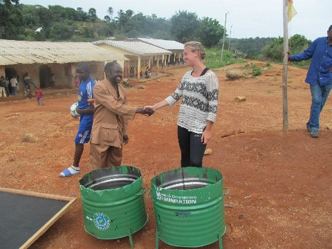
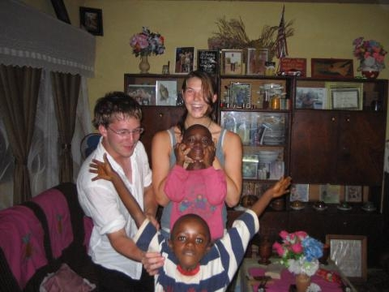

Allgemeine Information zum Freiwilligendienst in Kamerun

Wir organisieren gemeinsam mit unser lokalen Partnerorganisation Hope Foundation Cameroon jährlich verschiedene Projekt in Kamerun, in denen Du, egal wo aus der ganzen Welt, willkommen bist.
Du kannst zwischen fortlaufenden Programmen oder Sommer-Programmen (Juni-August) wählen.
Vor Ort möchten wir Dir die Möglichkeit geben neue Erfahrungen einer anderen Kultur und
eines anderen Lebensstils zu sammeln. Darüber hinaus bietet das Miteinanderleben und
–arbeiten eine hervorragende Gelegenheit,
neue Freundschaften zu schließen und mehr über ein faszinierendes Land zu lernen.
Wir heißen Dich jederzeit willkommen, um uns in unserer Arbeit zu unterstützen. Der Erfolg unserer Arbeit hängt
von Deinem Enthusiasmus und dem Einsatz ab. Deine Zeit, Energie
und Dein Talent kann etwas bewirken, wo Hilfe wirklich
gebraucht wird. Um Dich zu bewerben, bitte hier klicke oder schreib uns eine E-Mail (office[at]hope-found.org).

Der Zeitbedarf richtet sich nach den ausgewählten Programmen. Grundsätzlich unterstützt Du uns täglich 6 - 7 Stunden (Mo-Fr). Die Wochenenden und kamerunische Feiertagen sind frei und Du kannst diese für Ausflüge nutzen oder nach Deinen Wünschen gestalten.
Die Sommer-Programme werden üblicherweise in
kleinen Gruppen und für 3 Monate durchgeführt, während fortlaufende Programme Einzeln durchgeführt werden und eine Laufzeit von 4 Monaten bis zu einem Jahr umfassen
können. Du kannst immer frei entscheiden, an welchen Programmen und für
wie lange Du teilnehmen möchtest.
Spezielle Wünsche, die die Dauer oder Art der Programme betreffen, können wir
berücksichtigen.
Dauer,
Unterkunft und Kosten
Da die Hope Foundation eine kleine NGO mit begrenzten
finanziellen Mitteln ist, bitten wir jeden Freiwilligen, seine persönlichen
Kosten während seines Aufenthalts in Kamerun zu tragen. Insgesamt kostet
Unterkunft und Verpflegung für die oben genannte Option ca. 100 €/Woche.
Selbstverständlich kann unser Freiwilligenkoordinator die Freiwilligen bei der
Suche nach alternativen Unterkünften und Transportmöglichkeiten unabhängig von
der Hope Foundation unterstützen. Je länger du in Kamerun bleibst umso
günstiger werden die Kosten!!

- Du kannst zwischen 4 Wochen und 6 Monaten oder länger teilnehmen
- Wir haben eine sichere und komfortable Unterkunft für
unsere Freiwilligen oder Gastfamilien
- Wir holen unsere Freiwilligen vom Flughafen ab und
bringen sie wieder zurück
- 3 gesunde Mahlzeiten pro Tag sind inklusive
- Jeder bekommt ein Hope Foundation T-Shirt zum Anziehen!
Durch die Zusendung des Anmeldeformulars akzeptierst du
unsere Allgemeinen Geschäftsbedingungen. Wenn Du jünger als 18 Jahre bist, wird
entweder ein Elternteil oder ein Erziehungsberechtigter gebeten, in Deinem
Namen zu unterschreiben. Sobald wir Dein Bewerbungsformular erhalten haben,
bestätigen wir deine Bewerbung per E-Mail.
Detaillierte Informationen zur Unterkunft und
Orientierungstagen erhältst du per E-Mail.
Wir warten darauf, dass Du ein Teil unserer Familie wirst!